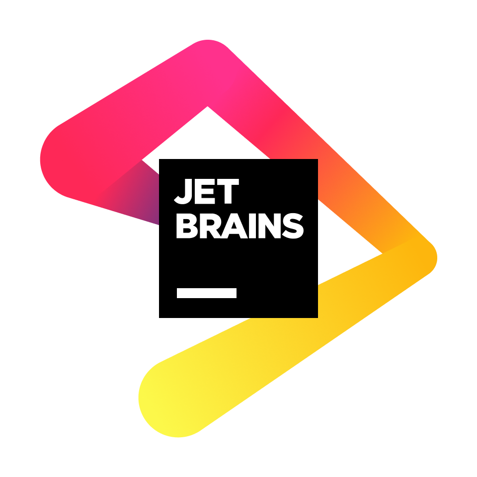
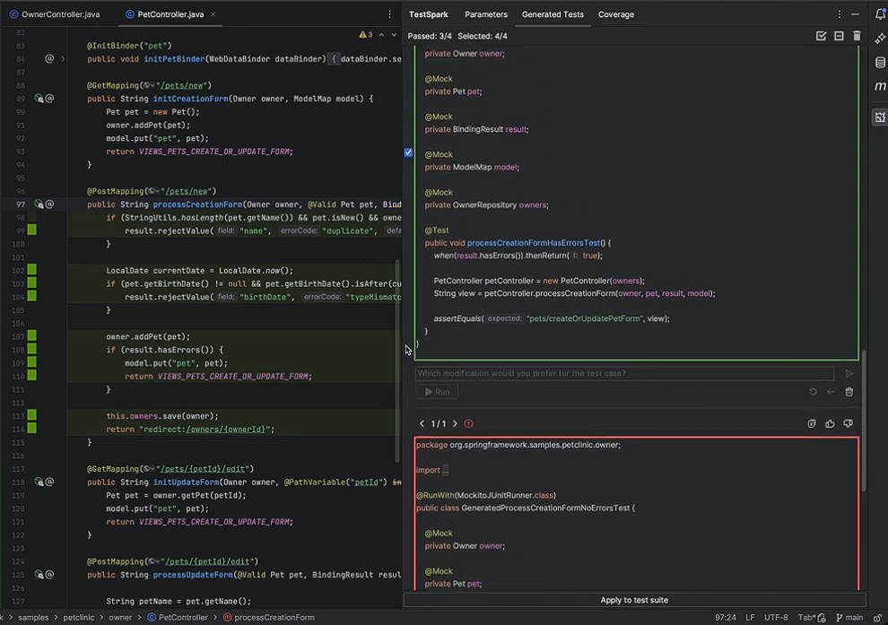

Entrée
Code source sélectionné par le développeur
IFT3913
Une extension open-source par JetBrains.
Pourquoi et par qui?

TestSpark est un plugin expérimental pour IntelliJ par JetBrains pour utiliser une IA pour écrire ses test units.
Il utilise une interface unique intégrée au workflow du dev pour produire des tests pertinents et qui fonctionnent avec notre code spécifique.
Stratégie 1
Le modèle lit le code et propose des tests adaptés à son comportement.
Code source sélectionné par le développeur
OpenAI ou Google AI, avec un token d’accès fourni par l’utilisateur
Tests unitaires pertinents, suggérés selon le contexte du code
Pour
isAdult(age)
, le LLM peut proposer les cas
17
,
18
et
25
.

Stratégie 2
Une recherche automatique fait évoluer les tests pour améliorer la couverture.
Tests initiaux, notamment ceux proposés par le LLM
Fait varier les tests pour explorer branches et chemins d’exception
Couverture du code ; la mutation vérifie si les tests détectent des changements artificiels
Pour
prixFinal(prix, remise)
, EvoSuite essaie des entrées variées afin d’atteindre les branches limites et les exceptions.
// Explorer les entrées
01 prixFinal(100, 10)
02 prixFinal(0, -5)
03 prixFinal(100, 100)
// Garder les cas qui couvrent
// de nouvelles branchesGénérer → varier → mesurer la couverture
Stratégie 3
Kex raisonne sur les conditions d’exécution pour chercher des chemins difficiles à atteindre.
Remplace les valeurs concrètes par des variables symboliques
Construit les contraintes de chaque chemin puis cherche des entrées qui les satisfont
Explore des chemins rares, mais les tests produits peuvent être moins lisibles
Pour
x > 0 && x != 5
, Kex cherche par exemple
0
,
5
et
6
pour explorer les différentes issues.
if (x > 0 && x != 5) {
traiter(x);
}
// Chemins et entrées possibles
x <= 0 // x = 0
x > 0 && x == 5 // x = 5
x > 0 && x != 5 // x = 6Symbole → contraintes → valeurs concrètes
Et maintenant?
[Une conclusion, une prochaine étape ou un appel à l’action.]
[Votre contact] ↗
TESTSPARK